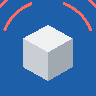

تطبيقات أحمد ربيع
اختار التطبيق. كل تطبيق ممكن يتثبت على الموبايل من قائمة المتصفح ← Add to Home screen.
مواقيت الصلاةمواقيت الصلاة لمحافظات مصر مع عدّاد للصلاة القادمة

Cube Crush Alertمنبّه تكسير مكعبات الخرسانة 7 و28 يوم من الـ Concrete Register
نسخة أندرويد من Cube Crush Alert بترن زي المنبّه حتى والتطبيق مقفول:
تحميل CubeCrushAlert.apk
IR Maker — بيعمل طلبات الفحص (IR) من الـ IR Log ويطلعها على الفورم جاهزة للطباعة:
تحميل IR-Maker.apk